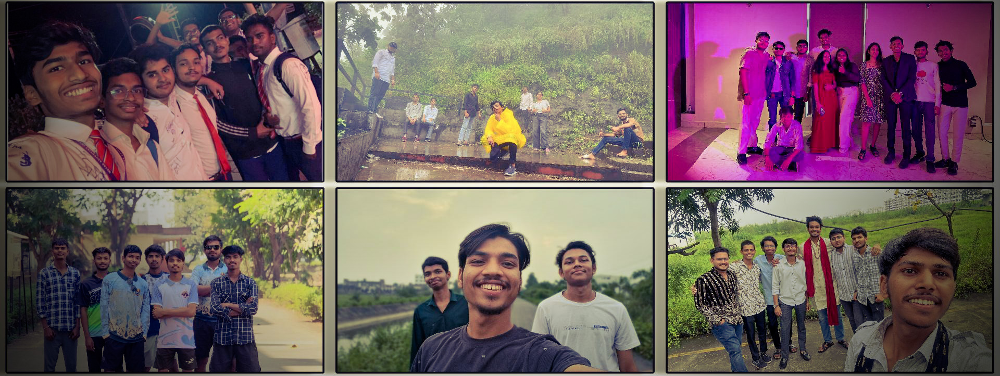
More About Me
Who I Am
My name is Nathanieal Sandipurti. I'm a game developer and programmer from Songadh, Gujarat — a small town where nobody really talked about making games. I'm currently pursuing my Bachelor of Engineering in Computer Engineering, but if I'm being honest, games have always been my real education. Everything I care about most, I learned from playing, watching, and eventually building them.

Me.
Growing Up in Songadh
There was no one around me who understood what I was trying to do. No community, no peers, no one to bounce ideas off. Game development wasn't something people in Songadh talked about — it was something I discovered alone, through a screen, in my own time. That isolation was real. But it also meant I had no choice but to figure things out myself.
Every tutorial I watched, every course I bought, every broken Unity project I debugged at sunrise — I did it without anyone around me knowing what any of it meant.
Songadh, Gujarat
How It All Started
My first ever video game was GTA Vice City. I remember just existing in that world — the music, the neon, the freedom to go anywhere and do anything. Then came Max Payne, and that slow-motion bullet-dodge made me feel like I was inside a film. I was completely hooked.
I didn't know it then, but those two games quietly planted a seed. Every game I played after that added something to how I think about design, story, and what it means to make a player feel something.
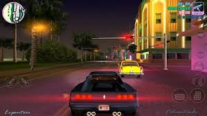
Vice City
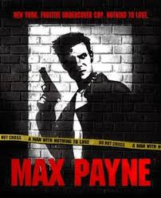
Max Payne
The Moment Everything Shifted
I finished Life is Strange. And then I just sat there. That specific kind of emptiness — where a story ends and you don't know what to do with yourself — I had never felt it from a game before. I had felt it from books. From films. But not a game.
The Turning Point.
My Favourite Game
Life is Strange — always. I played it on both PC and mobile, found it however I could, and it absolutely wrecked me in the best way. The choices, the atmosphere, the music, Max's journal, the way it made ordinary small-town moments feel unbearably heavy.
Dontnod showed me that games can carry the emotional weight of the best novels and films. That a small studio with a real vision can make something that stays with millions of people for years. That's the standard I hold myself to.
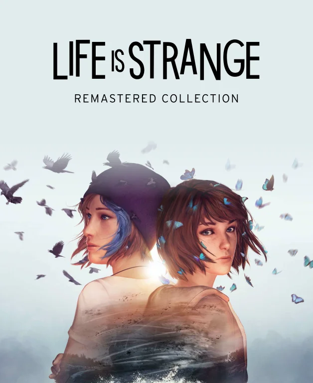
The standard I hold myself to.
Games I Play & Love
From childhood to now, games have never left my life — just evolved with me. GTA Vice City and Max Payne were the beginning. On mobile I've played Pascal Wager — which genuinely shocked me with its ambition — and Swordigo, which I've replayed probably more times than is reasonable.
I love story-driven games above everything else. Games where the world feels real, the characters feel real, and the ending lingers.
Pascal's Wager
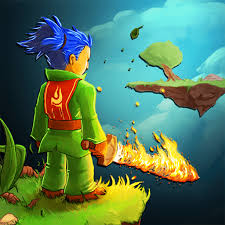
Swordigo
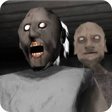
Granny
BeastBoyShub — My Favourite Creator
I don't have a gaming PC right now. So for the games I can't play myself — the big open worlds, the high-end titles, the experiences that need a powerful rig — I live them through BeastBoyShub. He's my favourite creator on the internet, full stop. His energy is completely genuine, his reactions make you feel every moment of the game right alongside him, and watching him is genuinely one of the most entertaining things I do in my free time.
But it's more than just entertainment — watching someone experience a game well-designed enough to pull real emotion out of a person quietly teaches you what good game design actually feels like from the outside.
My window into other worlds.
Sports — The Other Side of Me
In school it was football. I loved reading the game — knowing where to be before the ball got there, the split-second decisions, the trust you have to build with the people around you.
In college I picked up volleyball, got serious enough to win at Lakshya 2k25. Sports gave me things no classroom ever could — how to stay calm under pressure, how to trust your teammates, and how to keep showing up even when things aren't going your way.
I carry all of that into how I build games.

Lessons beyond the screen.
What I Read & Watch
I watch anime. I read manhwa and manhua — currently obsessed with The Greatest Estate Developer. Lloyd is genuinely one of the best protagonists I've come across — smart, funny, and the way he solves problems is endlessly satisfying.
I've also read While We Wait by Durjoy Datta, which hit harder than I expected. It reminded me that the best stories, in any format, are always really about people.
I also draw — random doodles mostly, whatever is floating around in my head that needs to get out. Nothing serious. Just thinking out loud on paper.
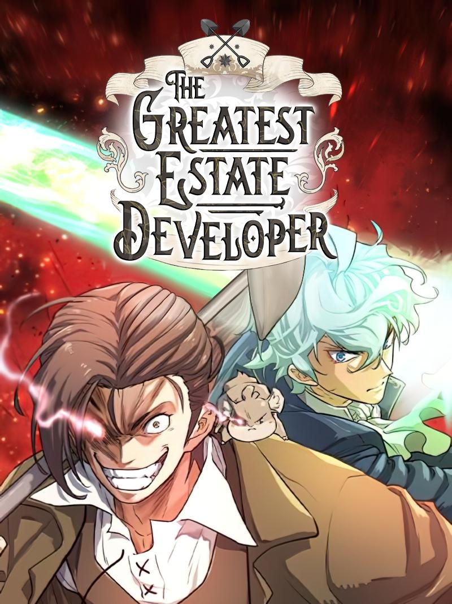
The Greatest Estate Developer

While We Wait
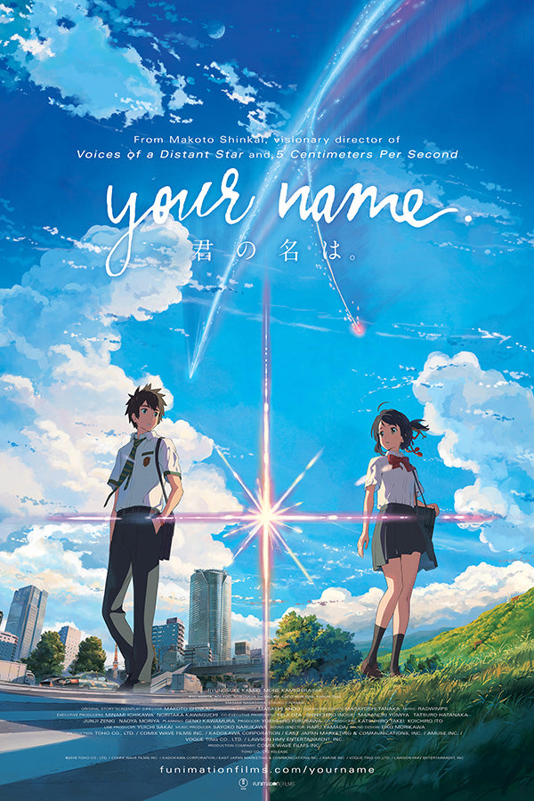
Anime
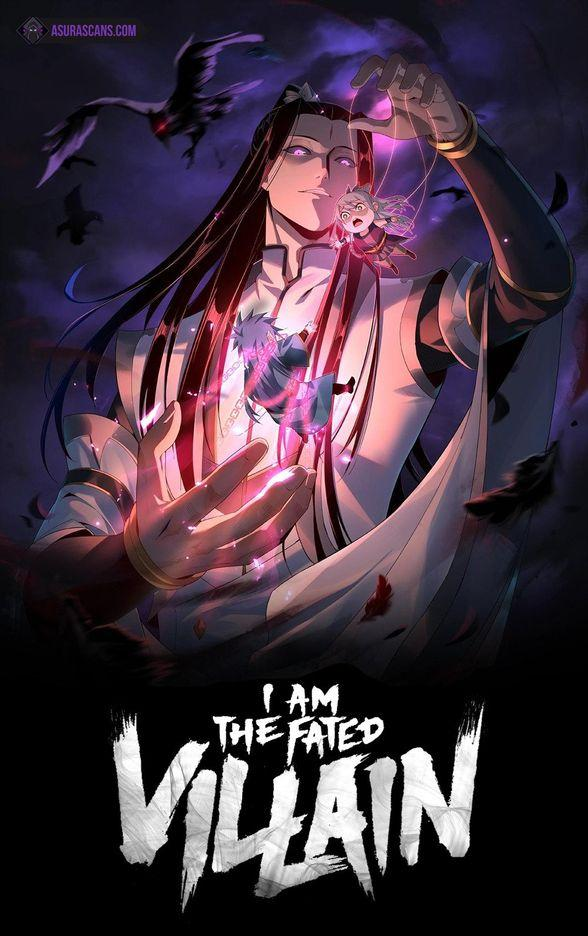
Manhua
What I Listen To
Music is a huge part of my zone. I listen to a lot of Indian hip-hop — artists like Raftaar and Kri$na always bring that raw energy, and Seedhe Maut is a personal favourite. There's something about their flow and authenticity that just hits different.
I also love exploring indie artists like Chaar Diwari and Gini. Their experimental sounds break the mold, and that kind of creative freedom is really inspiring to me, whether I'm working on a game or just taking a break.
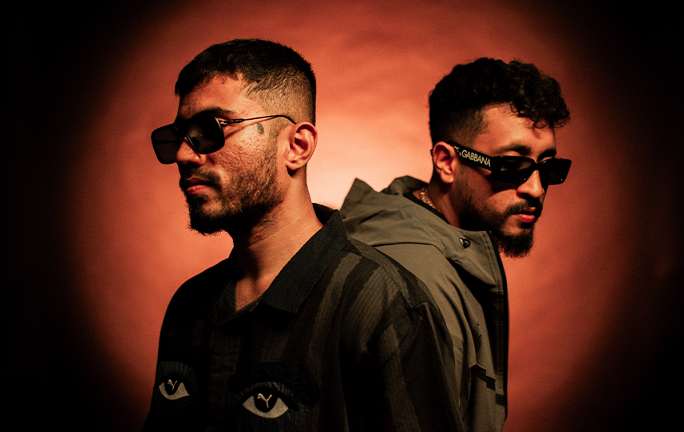
Seedhe Maut
Gini
Raftaar
How I Work
I'm an early bird. My clearest thinking happens in the quiet of the morning before the day gets loud. I code with whatever shuffle throws at me — no fixed playlist, just whatever the moment brings.
When I start a new game, I usually have a rough idea in my head and then I dive in — building, breaking, adjusting as I go. I believe in practice over theory.
My Weaknesses — And Why I'm Saying It
I'm not always confident. I deal with negativity — sometimes from outside, sometimes from inside my own head. Communication doesn't come as naturally to me as code does. I've struggled with all three for a long time.
But I'm telling you this because honesty is more interesting than a polished personal brand. I'm actively working on it — showing up, putting work out there, talking to people even when it's uncomfortable.
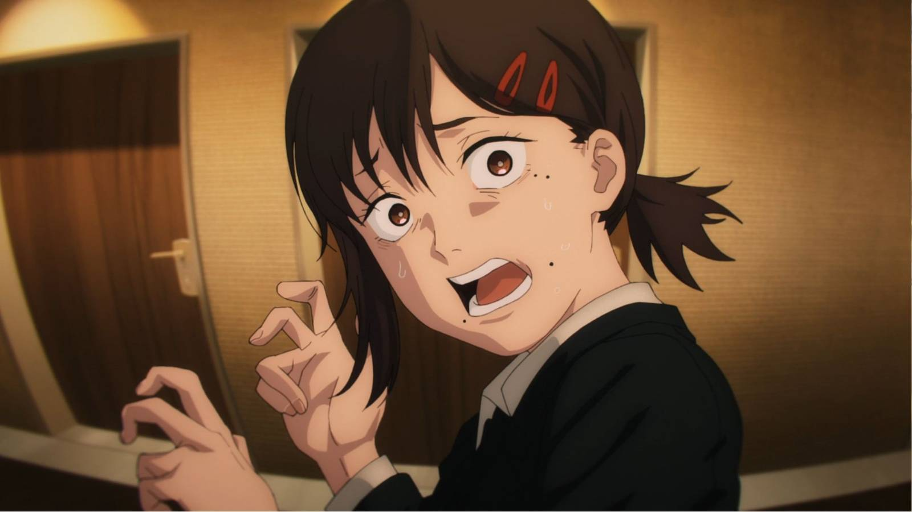
Growth isn't quiet or clean.
What I'm Working On Right Now
Just building. More games, more systems, more finished things. I believe the gap between where I am and where I want to be closes fastest by doing — not by planning, not by watching more tutorials, not by waiting until conditions are perfect.
Every project teaches me something I couldn't have learned any other way. So that's what I'm doing. Shipping, learning, repeating.
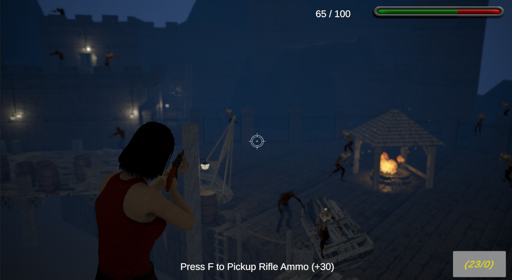
Building.
Learning.
What I'm Working Toward
I want to build story-rich narrative games and share the journey as a content creator. Games that make people feel something real and lasting.
I want to document the process too — the failures, the small wins, the debugging sessions that go nowhere, the ones that suddenly click — so that someone else who's trying to figure this out from a small town with no one around them doesn't feel as alone as I did.